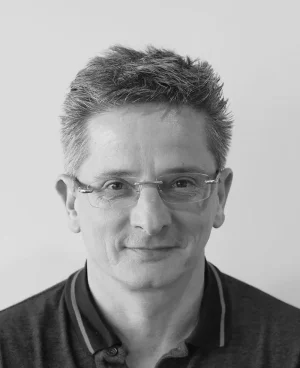

Médecin du sport
FR
Dr méd. Bertrand Curty
Depuis 1997, le Dr Curty est médecin officiel de l'équipe nationale suisse de ski. Titulaire d'un FMH en médecine interne générale et d'un certificat SEMS en médecine du sport, il allie diagnostic médical rigoureux et accompagnement global — du bilan médical complet à la prescription d'activité physique adaptée.
- FMH Médecine interne générale (2001) · Certificat SEMS (2006)
- Médecin de l'équipe nationale suisse de ski depuis 1997
- Directeur du Centre Médical de la Côte (depuis 2009) - Directeur médical MedBase Neuchâtel (depuis 2021)
En partenariat avec